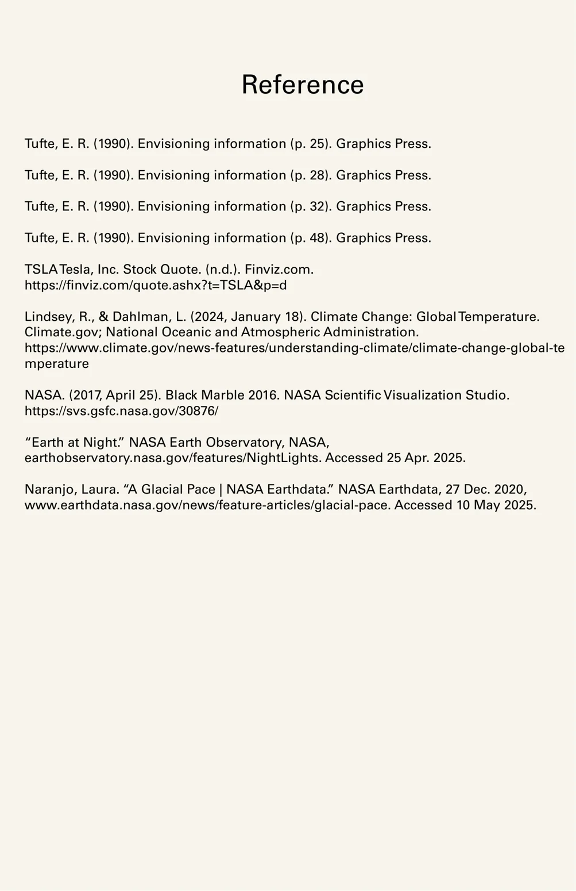

DES 149 · INFORMATION DESIGN · COURSEWORK
Climate Time Capsule
A two-page information-design project documenting environmental indicators through a layered climate dashboard.

01 / VISUAL SYSTEM
A snapshot of the climate
The final time capsule assembles indicators for atmospheric CO₂, global temperature, sea level rise, and Arctic sea ice. It uses a four-part gauge composition, supporting images, and data references to present a 2025 environmental snapshot.
02 / DESIGN PRINCIPLES
Applying information-design theory
The work explicitly draws on five information-design ideas studied in class: micro/macro readings, layering and separation, small multiples, color and information, and narrative of space and time. Research images and dataset values are sourced material, not original measurements.

ORIGINAL MATERIALS